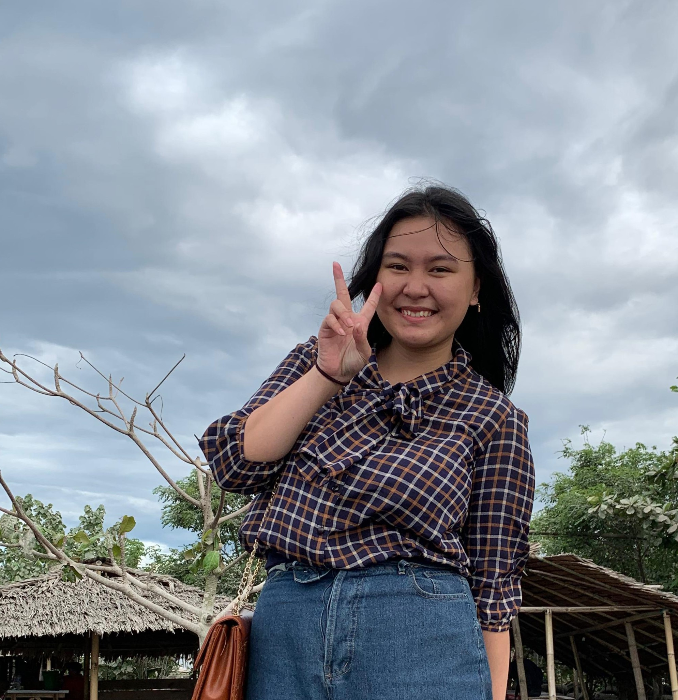

About Me
My name is Jesica, born in March 2006. According to others, I am someone who is passionate about exploring the world of knowledge and exploring ideas. I believe that life is an endless journey of learning and growth. My interests are broad, ranging from science and technology history. In terms of academics, I always strive to achieve the best results. I have a particular interest in the fields of information technology, communication, and networking. Artificial intelligence, natural language processing, and software development are some of the many topics that interest me. Moreover, I am a creative and innovative individual. I enjoy exploring new ideas and trying different approaches to problem-solving. I believe that collaboration and open discussion are key to finding better solutions. I am goal-oriented, yet also flexible and adaptive to change. I believe that with a combination of hard work, creativity, and perseverance, I can achieve anything I set my mind to.
During elementary school, I was filled with curiosity and eager for knowledge. I approached each day with enthusiasm, excited to learn and explore new things. In class, I was known to be less active and rarely socialized. I excelled academically in some subjects. I enjoyed solving problems and conducting experiments to see theories applied. Besides academics, I also valued the friendships I made during elementary school. However, I didn't have many friends at school due to limited interaction. Nonetheless, I could socialize in some situations, and I had very good friends back then, although we are not as close now. Overall, there was nothing particularly special about my elementary school years. It was adorned with a few friends and a high curiosity. Entering middle school, I began to socialize and became active in class. I made many friends, some of whom are still close to me today. During middle school, I was known as a diligent and smart student as I was placed in the advanced class.
In middle school, I began to participate in various activities such as scouting and art (Maengket). Additionally, in August of grade 9, I participated in the Tomohon International Flower Festival (TIFF). Middle school was the most memorable time of my life so far. It was when we started distance learning and did not take the NATIONAL EXAMINATION for the first time. At first, I was happy not to go to school, but eventually, I felt bored to stay longer. Then came the time when I had to graduate from middle school, and it was done online through my middle school's live YouTube channel. Overall, middle school was a time when I began to get to know and be more open to the outside world and started to socialize with the wider community.
During high school, I continued to develop my interests and skills, especially in the field of information technology and communication. In vocational high school, I focused more on practical learning that prepared me for the workforce. I took subjects directly related to my interests, seemingly focusing more on networking. I actively engaged in practical projects, both inside and outside the classroom, which helped me hone my technical skills. Moreover, high school was also a time when I began to prepare myself for life after school. I participated in Internship Programs. This was the most memorable thing for me in high school. I had direct experience with the working world and felt what it was like to work. Additionally, at the end of my education, we also conducted Vocational Competency Exams (UKK). This was also memorable during my high school years. In the UKK, we made random tokens and blocked sites and files. This was memorable because it was my first experience. Despite focusing on practical education and career preparation, I still maintained a balance between academics and social activities. I continued to maintain relationships with classmates.
In the end, high school was an important time in my educational journey where I could develop practical skills and explore career interests. In the future, I envision myself as a successful and influential professional in the field of information technology and communication. I see myself working in leading technology companies or perhaps even becoming a successful entrepreneur by starting my own technology company. I imagine that I will continue to develop skills in artificial intelligence, natural language processing, and software development. I want to become an expert in these fields and contribute to the development of technology that can have a positive impact on society. In addition to professional success, I also aspire to make a significant positive impact on the world. I want to use my knowledge and skills to address global challenges such as climate change, social inequality, and health issues. I believe that with creativity and innovation, we can find sustainable solutions that positively impact future generations. Personally, I hope to continue learning and growing throughout my life. I want to explore various opportunities and new challenges, both in my career and personal life. I am committed to remaining flexible, adaptive, and open to change, and always striving to be the best version of myself. In my vision of the future, I see myself living happily, balanced, and beneficial to the world around me. I hope to inspire and motivate others to pursue their dreams and contribute to positive change in society.
My Curiculum vitae

A dedicated and motivated Computer Engineering student with a passion for technology and innovation. Seeking internship opportunities to apply theoretical knowledge in practical settings, enhance skills, and contribute to meaningful projects in the field of software development and computer engineering.
Appreciation of culture
Appreciation of culture is essential for building bridges between communities and fostering a more inclusive and harmonious society.
Copyright © All rights reserved | This template is made with by Colorlib